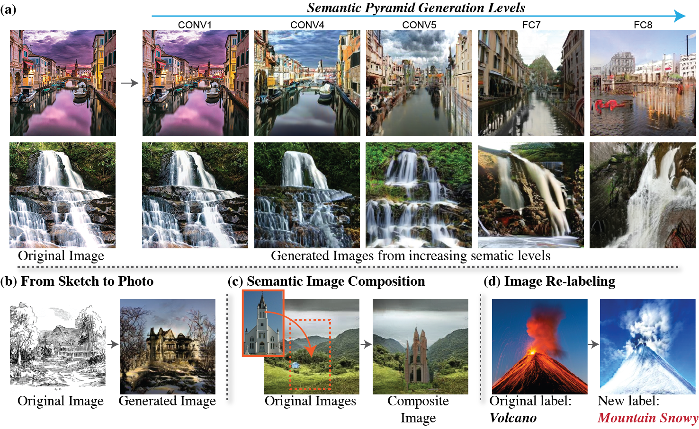
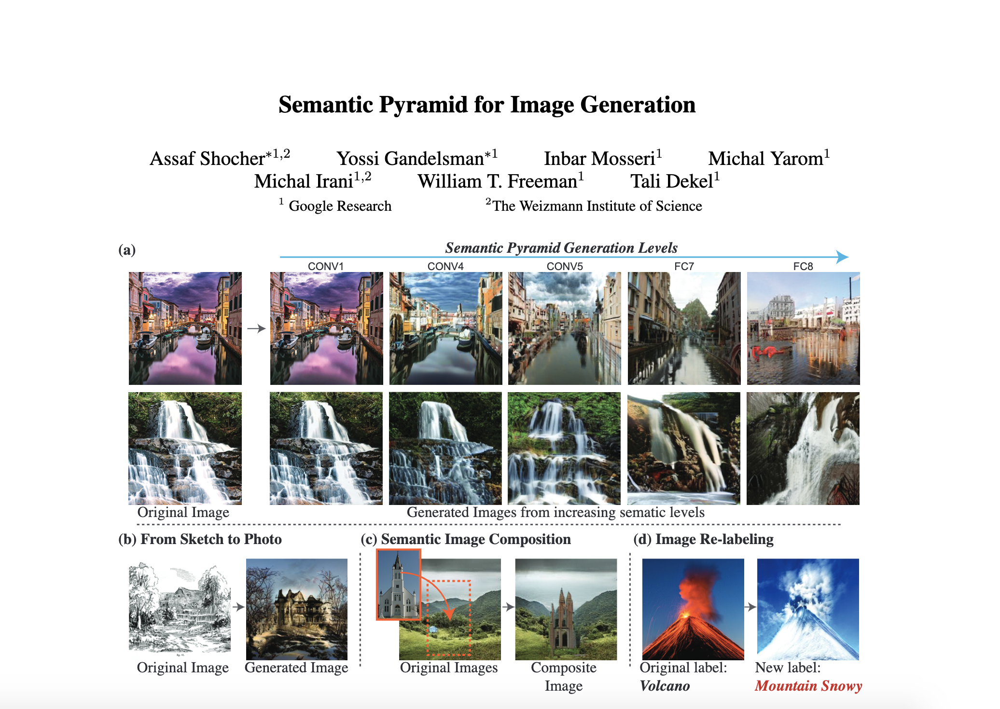

Semantic Pyramid for Image Generation
| Assaf Shocher* | Yossi Gandelsman* | Inbar Mosseri | Michal Yarom | Michal Irani | William T. Freeman | Tali Dekel |
| Google Research |
|  |
We introduce a new image generative model that is designed and trained to leverage the hierarchical space of deep-features learned by a pre-trained object recognition model. Our model provides a unified versatile framework for various image generation and manipulation tasks, including: (a) generating images with a controllable extent of semantic similarity to a reference image, obtained by reconstructing images from different layers of a classification model; (b) generating realistic image samples from unnatural reference image such as line drawings; (c) semantically compositing different images, and (d) controlling the semantic content of an image by enforcing a new, modified class label. |
Abstract
We present a novel GAN-based model that utilizes the space of deep features learned by a pre-trained classification model. Inspired by classical image pyramid representations, we construct our model as a Semantic Generation Pyramid - a hierarchical framework which leverages the continuum of semantic information encapsulated in such deep features; this ranges from low level information contained in fine features to high level, semantic information contained in deeper features. More specifically, given a set of features extracted from a reference image, our model generates diverse image samples, each with matching features at each semantic level of the classification model. We demonstrate that our model results in a versatile and flexible framework that can be used in various classic and novel image generation tasks. These include: generating images with a controllable extent of semantic similarity to a reference image, and different manipulation tasks such as semantically-controlled inpainting and compositing; all achieved with the same model, with no further training.
Paper
|  |
|
Supplementary Material:
 |
[Link] |
Last updated: Jan 2020